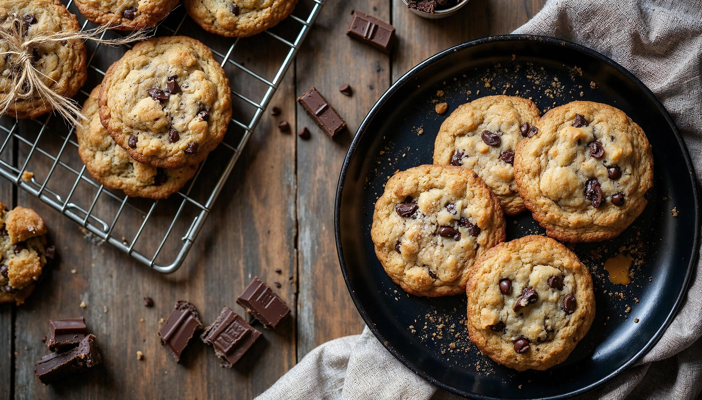

Oatmeal Cookies (that I can actually enjoy)

Description
These are stupidly simple oatmeal cookies that will stay fresh for about 5 days in an airtight container.
Ingredients
- 1 cup flour
- 1/2 tsp baking soda
- 1/4 tsp baking powder
- 1/2 tsp salt
- 1/2 tsp cinnamon
- 1/2 cup softened butter
- 1/2 cup sugar
- 1/2 cup light brown sugar
- An egg
- 1 tsp vanilla extract
- 1 1/2 cup old-fashioned/rolled oats
- Any additions measured to heart (chocolate chips, raisins, etc.)
Steps
- Preheat oven to 375F or 190C
- Line baking sheets with parchment paper
- Combine butter, sugar, and brown sugar into a standing mixer and mix until light and fluffy
- Add egg and vanilla
- Add flour, baking soda, baking powder, salt, cinnamon, and any other additions
- Scoop out dough with a random spoon
- Bake for 8-12 minutes; until top is set and edges are light brown
- Let cookies sit on pan for about 5 minutes before transferring to cooling rack